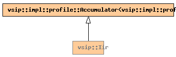

Global Namespace
Inheritance Tree
Inheritance Graph
Name Index
template <
typename
T,
obj_state
C
=
state_save
, unsigned int
N
=
0
,
alg_hint_type
H
=
alg_time
>
class
vsip
::Iir
File:
../../../vsip/core/signal/iir.hpp

-
Public Member function templates
template <
typename
Block0,
typename
Block1>
constructor
Iir
(
const_Matrix
<T, Block0>
b
,
const_Matrix
<T, Block1>
a
,
length_type
i
)
template <
typename
Block0,
typename
Block1>
Vector
<T, Block1>
operator()
(
const_Vector
<T, Block0>,
Vector
<T, Block1>)
-
Public Member functions
constructor
Iir
(const
Iir
&
iir
)
Iir
&
operator=
(const
Iir
&
iir
)
length_type
kernel_size
()
const
length_type
filter_order
()
const
length_type
input_size
()
const
length_type
output_size
()
const
void
reset
()
float
impl_performance
(const char*
what
)
const
-
Public Data members
const
obj_state
continuous_filtering
= C
-
Private Typedefs
impl::profile::Accumulator
<
impl::profile::signal
>
accumulator_type
-
Private Data members
Matrix
<T>
b_
Matrix
<T>
a_
Matrix
<T>
w_
length_type
input_size_
Generated on Sat Apr 17 11:13:07 2010 by
synopsis
(version 0.12)
 synopsis
synopsis